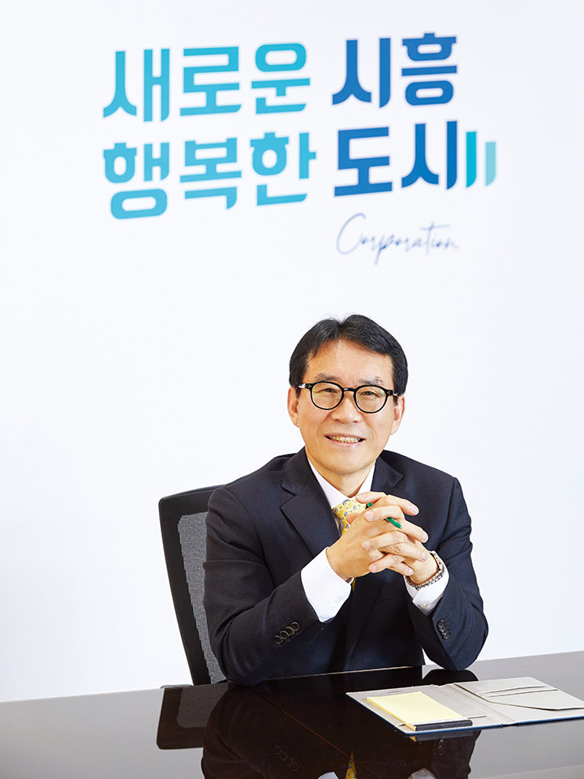
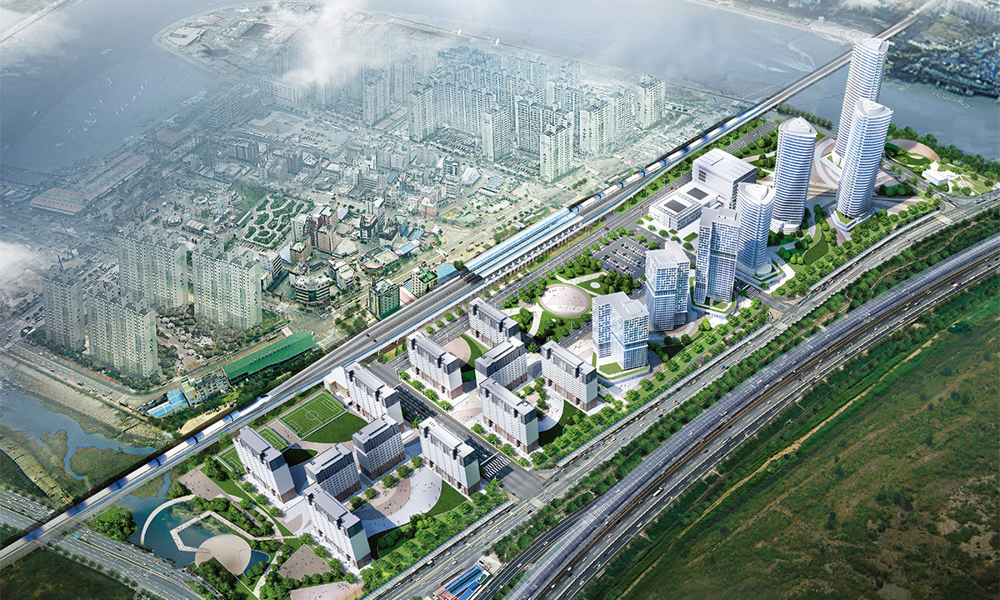
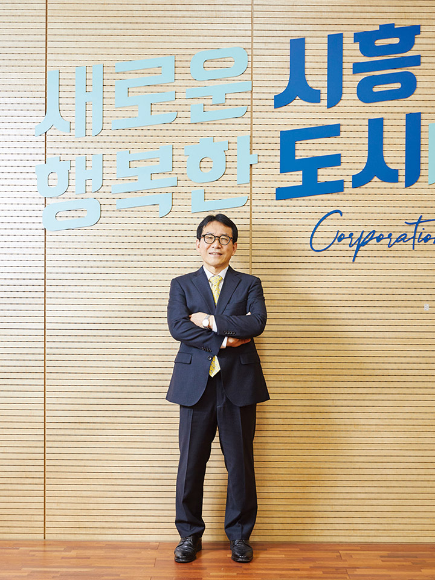

광주 대중교통의 중심축으로서 끊임없는 성장과 변화를 모색해온 광주광역시도시철도공사는 코로나19 위기에도 변화와 혁신을 꾀하며 비약적인 성과를 내었다. 최근 2021 지방공기업 경영평가에서 ‘가’ 등급을 받으며 전국의 도시철도 운영기관 최초로 8년 연속으로 우수기관에 선정되는 쾌거를 이뤄냈다. 특히 2023년 도시철도 2호선 개통을 앞두고 ‘대중·녹색교통 중심도시’를 구현하기 위한 변화를 예고하며 혁신을 이뤄내고 있는 윤진보 사장을 만나봤다.
글 편집실 사진 조인기

●
광주도시철도공사의 소개를 부탁드립니다.
광주광역시도시철도공사(이하 공사)는 2004년 개통 이래 광주 시민의 발이자 벗으로 지역사회와 함께 성장해 올해로 창립 18주년을 맞았습니다. 공사는 현재 광주시 동구 녹동에서 광산구 평동까지의 20.5Km 거리에 20개의 역으로 구성된 1호선을 운영하며 광주 대중교통의 핵심축 역할을 하고 있습니다.
900여 임직원이 한 마음으로 최고의 안전한 공공 교통 서비스를 제공하고, 친환경 교통 도시 광주를 구현하기 위해 최선을 다하고 있습니다. 특히 단순한 대중교통 수단이 아닌 사람과 문화가 만나는 행복한 공간이자 시민이 주체가 되는 지역공동체와의 소통과 상생의 장으로 운영되고 있으며 시민의 복지 공간으로도 사랑받고 있습니다.
●
사장님이 취임하셨을 당시, 공사는 규모면에서 이룬 성장에 비해 대내적으로 직면해야 했던 문제가 있었을 텐데요.
공사는 2004년 1호선을 개통한 이후 광주 대중교통의 중심을 담당하며 시민의 이동권 확보와 도시의 균형 발전을 이끌어왔습니다. 2019년 취임할 당시, 공사는 지금까지의 성장을 발판으로 더 큰 변화를 모색해야 한다는 시대적 과제 앞에 서 있었습니다. 대외적으로는 사회경제적 변화에 따른 혁신이 필요했고, 내부적으로는 노후화된 시설로 새로운 성장 모멘텀을 찾아야 하는 상황이었기에 고통과 인내를 감내하겠다는 각오로 미래 준비에 나섰습니다.
특히 2018년 가을, 지역의 17년 동안의 숙원 사업이었던 도시철도 2호선이 시민 공론화를 통해 건설이 확정됐습니다. 현재의 1호선과 이를 둘러싼 순환선 형태의 2호선으로 광주지역 어디든 30분 이내에 연결할 수 있는 도시철도 중심의 대중교통 체계를 준비하는 중요한 시점이었습니다. 때문에 취임한 이후 지금까지 도시철도 2호선의 원활한 개통을 준비하며 지역의 대중교통망 전체를 아우르고 안정된 도시철도를 운영하는 데에 만전을 기하고 있습니다.
●
2021 경영평가에서 최우수 등급인 ‘가’ 등급을 받는 등 취임하신 이후 많은 성과를 이루셨습니다. 이에 관련해 소감과 비결이 궁금합니다.
저에게도 올해 행정안전부의 ‘2021년 전국 지방공기업 경영평가’에서 272개 지방공기업 가운데 전국 1위로 ‘가’ 등급을 받으며 최우수기관에 선정된 것이 가장 애착이 가는 성과입니다. 특히 이번 평가 결과로 전국도시철도 운영기관 최초로 8년 연속으로 우수기관으로 선정되는 쾌거를 이뤘습니다. 사회적 가치 확산과 혁신 성과 창출을 위해 애쓴 노력을 중앙정부가 인정해 준 것이라 매우 기쁩니다. 이번 평가에서 공사는 코로나19 팬데믹 극복을 위한 재난컨트롤 타워 구축과 양심마스크 운영을 비롯한 현장맞춤형 방역, 착한임대인 감면 등 지역 상생 마케팅, 코로나19 극복을 위한 시민 위로 프로젝트 추진 등 선제적・능동적으로 코로나19에 대응한 노력을 높게 평가받았습니다.
이는 900여 임직원 모두가 최고의 공사를 운영하겠다는 마음이 하나가 되어 움직여주지 않았다면 이룰 수 없는 성과였습니다. ‘시민의 행복’이라는 목표를 향해 ‘원팀’이 되어 함께 뛰어준 우리 임직원들의 노력 덕분에 이 모든 성과를 이뤄낼 수 있었습니다.
●
취임하신 후 코로나 팬더믹에도 불구하고 변화와 혁신을 꾀하며 비약적인 성장을 이루셨습니다. 그 주요 성과와 성과를 낼 수 있었던 배경은 무엇인지요.
많은 성과 중의 하나로 고용노동부로부터 ‘2021 노사문화대상’에 선정된 것을 꼽고 싶습니다. 올해는 특히 전국 도시철도가 무임승차 국비 지원 등 재정문제 해결책을 고민하는 과정에서 노사 간의 진통을 크게 겪었던지라 공사의 협력적 노사관계가 더욱 주목을 받게 됐습니다.
또한 국토부 「대중교통 운영자에 대한 경영 및 서비스 평가」 우수기관, 행안부 「지방공기업 고객만족도」 전국도시철도 1위를 연달아 기록하며, 경영뿐만 아니라 고객 서비스에서도 국내 최정상의 수준임을 입증했습니다. 안전 측면에서도 국토부 재난 대비 비상대응 불시훈련 평가 2년 연속 우수기관, 국토부 철도안전관리 수준평가 3년 연속 우수기관 선정 등을 달성하며 전국에서 가장 안전한 도시철도로 인정받았습니다.
이 외에도 드론, IoT를 활용한 시설물 점검 관리 등을 통해 행안부 재난관리평가 우수기관 선정, 인적자원개발 최우수기관 인증 등 다양한 분야에서 우수한 성과를 받아온 점이 반영됐습니다. 특히 임신부·다자녀 가정 운임면제제도 시행, 인권패트롤 운영, 전국 최초 협력업체 인권영향평가 합동점검 1등급 달성, 광주상생카드 이용 활성화, 지역인재 채용, 공공자원 개방 공유 등 지역과 상생하는 사회적 가치 실현으로 지방공기업으로서의 모범을 보인 것이 인정받게 된 것 같습니다.
●
임기 동안 다양한 분야에서 혁신을 이루셨는데, 특히 신규 사업 진출로 재무구조 개선 및 성장동력을 확보한 것이 눈에 띕니다.
공사는 기술력을 활용해 국내 및 해외의 철도 사업에 참여하며 신규 수익을 창출하고, 현장 경험을 통한 성장동력을 확보하기 위해 적극적으로 나서고 있습니다. 우선, 지난 해 6월, ㈜현대로템과 이집트 카이로 1호선의 전동차 중정비 기술 용역을 체결하고 해당 사업을 수행하고 있습니다. 이는 광주시 산하 공기업의 해외 진출로는 첫 사례입니다. 현재 공사는 이집트 카이로 1호선의 전동차 중정비에 대한 현지인 작업자 교육, 작업매뉴얼 작성, 전동차 분해정비 기술지원 등을 맡아 시행하고 있습니다. 그간 광주도시철도 1호선을 운영하며 쌓은 기술력과 노하우를 세계 시장에서 인정받았기에 보람을 느끼며 열심히 추진하고 있습니다.
또한 올해부터 서울의 ‘신림선 경전철 운영 및 유지보수 사업’을 담당하고 있습니다. 남서울경전철㈜가 시행하는 해당 사업에 공사가 현대로템㈜과의 컨소시엄으로 참여한 결과 풍부한 도시철도 운영 노하우를 인정받아 사업을 맡게 됐습니다. 신림선 경전철은 ‘여의도샛강역’부터 ‘서울대역’까지 총연장 7.76㎞, 정거장 11개소, 차량기지 1개소, 종합관제동 1개소로 구성되며 내년에 개통될 예정입니다. 총 사업비는 3,700억 원이며, 공사는 4년 1개월간 운영 및 유지보수를 담당합니다.
무엇보다 신림선 경전철은 광주도시철도 2호선과 같은 고무차륜 방식이어서 2호선 건설 및 운영에 필요한 기술력을 확보할 수 있다는 측면에서도 좋은 기회가 됩니다. 신림선 경전철 사업을 통해 추후 2호선 운영 시 시행착오를 줄일 수 있는 다양한 노하우를 축적할 수 있을 것으로 기대하고 있습니다. 이는 곧 공사가 성장할 수 있는 소중한 경험이자 자양분이 될 것이라는 믿음으로 새로운 성장모델 개발을 위해 더욱 최선을 다하고자 합니다.


●
도시철도 2호선 개통으로 인해 광주의 교통체계는 커다란 지각변동이 예상되는데요. 향후 도시철도의 운행, 서비스, 경영 전략 등은 어떻게 강구하고 계신가요.
앞으로 2호선이 개통되면 도시철도를 중심으로 시내버스, 자전거, 개인형 이동장치, 보행이 상호 연계되는 ‘대중·녹색교통 중심도시’를 구현하기 위한 과감한 개혁을 통해 큰 변화가 예상됩니다. 공사도 이에 발맞춰 도시철도 2호선의 효율적인 운영에 대비하는 등 대중교통 활성화를 통한 녹색 광주를 구현하기 방안을 강구하고 있습니다.
도시철도 2호선은 무인운전 시스템으로 계획되고 있기에 최첨단 과학기술을 활용한 스마트 안전 관리 체계를 정립할 것입니다. 공사는 현재 AI, IoT, 드론 등 다양한 기술을 활용해 안전 시스템을 고도화하는 데 주력하고 있습니다. 특히 도시철도 2호선은 확대 순환선으로서 대학가와 신도심 등 도시의 주요 거점을 경유하며 광주를 순회하도록 건설되고 있습니다. 수혜 주민이 광주 인구의 17%에서 70%로 대폭 확대되는 등 광주시 대중교통 체계의 혁신적인 변화가 기대됩니다. 이에 대비해 공사는 1호선의 운영 노하우를 2호선 건설에 최대한 반영해 시민을 위한 최고의 명품 도시철도가 건설될 수 있도록 시와의 협업 등에 적극적으로 나서고 있습니다.
우선 2호선 개통에 대비할 조직과 운영 인력 로드맵을 수립하고 차량 등 분야별 전문인력을 양성하고 있습니다. 또한 2호선 역세권 중심의 도시 개발 계획 건의 등을 추진하는 등 2호선 운영을 위한 본격적인 준비를 서두르고 있습니다. 이와 함께 공사가 보유하고 있는 1호선 건설 및 운영 전문가 그룹을 풀 가동해 신공법, 신기술 등이 건설에 반영되도록 적극적으로 추진함으로써 건설비 및 운영비를 절감하는 데 주력하고 있습니다.
●
공사도 ESG 경영활동에 최선을 다하고 있는 걸로 알고 있습니다. 어떤 전략과 실행 방안을 마련하고 계신지요.
이제는 눈앞의 경쟁이 아닌 미래 성장을 향해 시야를 넓혀야 합니다. 공사는 올해 4월, 전국 도시철도 최초로 ESG 경영을 선포했습니다. 도시철도 중심의 생태교통 조성, 사회적 약자 배려 시스템 구현, 시민 참여 경영 플랫폼 활성화 등 112대 ESG 경영 과제를 발표하고 공유와 연대하는 새로운 공기업으로서의 모델을 제시했습니다. 그 일환으로 도시철도-자전거 연계 확대, 민관협업 탄소 중립 활동, 청년 일자리 창출, 임신부 다자녀 가정의 운임 지원, 시민 경영 참여 플랫폼 구축 등 시민과 함께하는 ESG 활동을 펼치고 있습니다.
특히 동종기관 최초로 공사가 창출한 사회적 가치를 측정·분석해 지속가능 발전을 위한 정책을 모색하는 자료로 활용하고 있습니다. 16개 과제를 대상으로 측정한 결과 1.33의 양호한 수준의 기준점을 선정했고, 이를 더욱 확장하며 사업의 기획 단계부터 ESG 가치를 고려할 수 있도록 사회성과 자가 점검 시스템을 도입하는 등 적극적으로 실행해나갈 계획입니다.
●
코로나19 장기화를 극복하기 위해 도시철도를 시민과의 문화 소통 채널로 활용하신 전략이 눈에 띕니다.
광주도시철도는 남도의 멋과 흥을 담은 문화지하철을 지향하고 있습니다. 문화전당역의 ‘5·18 기념홍보관’, 김대중컨벤션센터역의 ‘세계인권전시관’, 학동·증심사입구역의 ‘무등산국립공원테마관’ 등을 포함해 각 역에서 다양한 테마를 즐길 수 있습니다. 또한 시민의 재능기부를 통한 흥겨운 공연도 펼쳐지는데, 현재는 코로나19로 영상을 통해 비대면으로 시민을 찾아 뵙고 있습니다.
특히 ‘AI 중심도시 광주’에 걸맞도록 지하철역에 시민을 위한 디지털 체험의 장을 마련하고 있습니다. 지난 7월, 금남로4가역에 조선대학교와 함께 조성한 AI문화예술체험관은 많은 시민들에게 VR, AI 기술 등 디지털을 일상에서 만나는 기회를 제공해 큰 호응을 얻었습니다. 또한 이곳에 농촌진흥청과 함께 'AI스마트팜'을 올해 안에 오픈할 예정입니다. AI스마트팜은 첨단정보통신기술(ICT)을 통해 식물이 자라나는 데 필요한 빛, 공기, 온・습도, 양분 등을 인공지능으로 제어하는 실내 농장 시스템입니다. 시민들이 직접 최첨단 농업 기술을 견학·체험하고 농산물도 구매할 수 있습니다. 또한 이곳에 광주정보문화산업진흥원과 함께 조성하고 있는 ‘애니메이션 콘텐츠홀’도 지역의 콘텐츠 산업 부흥을 위해 큰 역할을 해낼 것으로 기대됩니다.
나아가 본격적인 위드 코로나 시대를 대비해 앞으로는 어린이를 대상으로 한 녹색교통 체험교육, 시민 안전체험 활동, 특별 문화체험 프로그램 등 대면 소통 프로그램도 철저한 방역 속에 조심스럽게 준비해볼 예정입니다. 광주도시철도는 단순히 이동 수단이 아닌 즐거움과 배움이 있는 곳, 문화와 경제가 생산되는 곳, 그 자체가 목적지가 되는 곳으로 지금 업그레이드되고 있습니다.
●
공사의 내년 목표와 계획은 무엇인가요.
2년에 걸친 코로나19 사태로 사회의 각 분야가 위축됐습니다. 이제는 위드 코로나 시대에 대응해 단계적 일상 회복에 걸맞는 시민 편의 및 복지 증진에도 힘을 기울이고자 합니다.
우선 철저한 방역을 기본으로 대중교통 이용 활성화, 역사를 중심으로 한 역세권 발전을 위해 전사적인 노력을 펼칠 예정입니다. 특히 긴 사회적 거리두기로 대중교통 이용이 위축된 점을 감안하고 대중교통을 중심으로 한 도심 활성화를 위해 적극적으로 나서 활력 넘치는 광주를 구현하는 데에 이바지할 것입니다.
시민 편익 증진과 지역 발전을 위해 공사가 해야 할 일에 대해 적극적으로 나서고, 깊이 있는 ESG 경영을 펼쳐 시민 편익을 극대화해 사회적 가치 향상에도 주력코자 합니다. 또한 AI 메타버스 시대에 걸맞는 첨단 과학을 적극적으로 받아들여 안전 등 경영활동 전반에 적용하는 등 변화하는 시대에 순발력있게 대응하는 조직을 운영하는 데 최선을 다할 것입니다.
공단은 공익성 강화와 함께 수익성 측면에서도 대대적인 혁신을 추진코자 합니다. 도시철도를 이용하는 승객을 확대하기 위한 신규사업 발굴, 부대사업의 적극적인 확충, 높은 기술력을 활용한 새로운 수익사업 창출에 적극적으로 나설 예정입니다.
숫자로 보는 광주광역시도시철도공사
윤진보 광주광역시도시철도공사 사장
“그간 코로나19 사태로 모두 어려움을 많이 겪었습니다. 하지만 오히려 우리 스스로도 알지 못했던 새로운 저력과 가능성을 발견하는 계기도 되었습니다. 본립도생(本立道生)이라 했습니다. 어려움 속에서도 기초가 제대로 서면 자연히 앞으로 나아갈 길이 보입니다. 광주도시철도공사는 시민의 발로서 지역주민들이 무사히 일상에 복귀해 밝은 미래를 향해 달려갈 수 있도록 최선을 다해 자리를 지키고자 합니다. 어려운 시기를 함께 잘 버텨낸 모두에게 위로와 응원의 말씀을 전하며 조금만 더 힘내자고 이야기하고 싶습니다.”